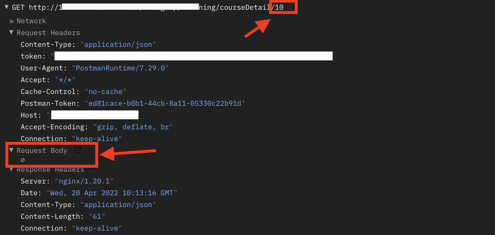
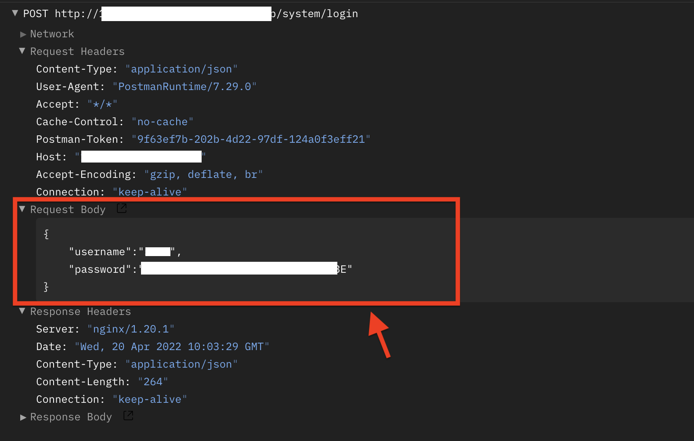

在客户机和服务器之间进行请求-响应时，两种最常被用到HTTP请求方法是：GET和 POST。
GET方法
通常是从指定的资源请求数据
- GET可以将参数数据加到URL中，用户可以看到
- GET请求可以被缓存，可以保留在浏览器历史记录中
- GET请求可以被收藏为书签
- GET请求不应中处理敏感数据时使用
- GET请求有长度限制
- GET请求通常用于取回数据

POST方法
通常向指定资源传送数据
- POST请求数据放在Request body中。
- POST请求不会被缓存
- POST请求不会保留在浏览器历史记录中
- POST不能被收藏为书签
- POST请求对数据长度没有要求
例如这里的登录接口，账号和密码是写在Request body中，

GET和POST的区别
| 区别类型 | GET | POST |
|---|---|---|
| 安全性 | 与 POST 相比，GET 的安全性较差，因为所发送的数据是 URL 的一部分，在发送密码或其他敏感信息时绝不要使用 GET ！ | POST 比 GET 更安全，因为参数不会被保存在浏览器历史或 web 服务器日志中 |
| 后退/刷新 | 无害 | 数据重新提交，重新请求接口 |
| 书签 | 可收藏为书签 | 不可收藏 |
| 缓存 | 能被缓存 | 不能缓存 |
| 编码类型 | ASCII | SO10646 |
| 历史记录 | 参数可以保存着历史记录中 | 参数不能保存 |
| 数据长度限制 | 最长2048个字符 | 无限制 |